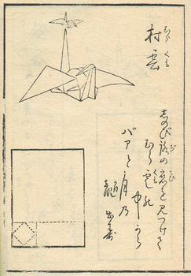

Origami
Origami (de la ori care înseamna „pliere” si kami (gami) însemnând „hârtie”) este arta plierii hârtiei, care este adesea asociata cu cultura japoneza. În utilizarea moderna, cuvântul "origami" este folosit ca termen incluziv pentru toate practicile de pliere, indiferent de cultura lor de origine. Scopul este de a transforma o foaie patrata de hârtie într-o sculptura finisata prin tehnici de pliere si sculptura. Practicanti moderni de origami în general descurajeaza utilizarea taieturilor, lipiciului sau marcajelor pe hârtie. Dosarele Origami folosesc adesea cuvântul japonez kirigami pentru a se referi la modele care folosesc taieturi.
Numarul mic de pliuri de baza poate fi combinat într-o varietate de moduri pentru a face modele complexe. Cel mai cunoscut model origami este lebada japoneza de hârtie. În general, aceste modele încep cu o foaie patrata de hârtie ale carei laturi pot fi de diferite culori, imprimeuri sau modele. Origamiul traditional japonez, care a fost practicat înca din Perioada Edo (1603-1867), a fost adesea mai putin strict cu privire la aceste conventii, uneori taind hârtia sau folosind forme necurate pentru a începe. Principiile origami sunt utilizate si în creerea ambalajelor, printre alte aplicatii ale ingineriei.
Istorie
În Europa, China si Japonia au aparut traditii distincte de pliere a hârtiei, care au fost bine documentate de istorici. Acestea par a fi fost în mare parte traditii separate, pâna în Secolului 20.
În China , înmormântarile traditionale includ adesea arderea hârtiei îndoite, cel mai adesea reprezentari ale pestilor de aur (yuanbao). Practica arderii reprezentarilor de hârtie în loc de replici pe scara larga din lemn sau argila dateaza din Dinastia Song (905–1125 CE), desi nu este clar cât de mult a fost implicat plierea.

În Japonia , cea mai veche referire la un model de hârtie este într-un scurt poem de Ihara Saikaku din 1680, care mentioneaza un design traditional de fluturi folosit în timpul nuntii. Hârtia pliata a fost folosita in ceremonii în cultura japoneza din perioada Edo. Aceasta s-a dezvoltat într-o forma de divertisment; primele doua carti de instructie publicate în Japonia sunt în mod clar recreative.
În Europa , a existat un gen bine dezvoltat de pliere a servetelelor, care a înflorit în secolele XVII si XVIII. Dupa aceasta perioada, acest gen a scazut in folosinta si a fost în cea mai mare parte uitat. Istoricul Joan Sallas îi atribuie acestei disparitii introducerea portelanului, care a înlocuit pliurile complexe de servetel ca simbol al statutului mesei de cina în rândul nobilimii. In orice caz, cateva dintre tehnicile si bazele asociate cu aceasta traditie au continuat sa faca parte din cultura europeana; plierea era o parte semnificativa a „Gradinitei” de Friedrich Froebel, metoda si desenele publicate în legatura cu programa sa sunt similare stilistic cu repertoriul cu servetele. Un alt exemplu de origami timpuriu în Europa este "parajita", o pasare stilizata ale carei origini dateaza cel putin din secolul al XIX-lea.
Când Japonia si-a deschis granitele în anii 1860, ca parte a unei strategii de modernizare, au importat sistemul de gradinita Froebel - si, odata cu acesta, idei germane despre hârtie. Asta a inclus interdictia de taieturi si forma de pornire a unui patrat bicolor. Aceste idei, precum si o parte din repertoriul pliant european, au fost integrate în traditia japoneza. Înainte de acestea, sursele traditionale japoneze foloseau o varietate de forme de început, adesea avand taieturi; si daca aveau culoare sau marcaje, acestea ereau adaugate dupa ce modelul a fost pliat.
La începutul anilor 1900, Akira Yoshizawa, Kosho Uchiyama si altii au început sa creeze si sa înregistreze opere originale. Akira Yoshizawa a fost responsabila în special pentru un numar de inovatii, cum ar fi plierea umeda si sistemul de diagrama Yoshizawa – Randlett, opera sa a inspirat o renastere a acestei forme de arta. În decursul anilor 1980, o echipa de oameni de stiinta a început studierea sistematica a proprietatilor matematice ale formelor pliate, ceea ce a dus la o crestere rapida a complexitatii modelelor de origami.
Hartia pentru Origami
Aproape orice material laminar (plat) poate fi folosit pentru pliere; singura cerinta este ca aceasta sa poata fi pliat.
Hârtia origami, denumita adesea "kami" (cuvantul japonez pentru hârtie), se vinde în patrate preambalate de diferite dimensiuni, de la 2,5 cm (1 in) la 25 cm (10 in) sau mai mult. Este de obicei colorata pe o parte si alba pe cealalta; cu toate acestea, exista versiuni colorate pe ambele parti care pot fi utilizate eficient in diferite modele. Hârtia Origami cântareste mai putin decât hârtia normala, ceea ce o face potrivita pentru o gama mai larga de modele.
Hârtiea normala cu o greutate de 70–90 g / m2 (19–24 lb) poate fi utilizata pentru pliuri simple. Hârtiile mai grele de 100 g / m2 (aproximativ 25 lb) pot fi pliate umed. Aceasta tehnica permite o sculptura mai rotunda a modelului, care devine rigida si rezistenta când este uscata.
Hârtia lucioasa poate fi, de asemenea, folosita pentru a face sculpturi si, dupa cum îi spune si numele, este o foaie lucioasa subtire lipita de o foaie de hârtie subtire.
Washi este hârtia origami traditionala folosita în Japonia. Washi este în general mai dura decât hârtia obisnuita din lemn si este folosita în multe arte traditionale. Washi este de obicei facuta din fibrele cojii arborelui gampi, arbustiului mitsumata (Edgeworthia papyrifera) sau murii de hârtie, dar poate fi obtinut si din bambus, cânepa, orez sau grâu.
Hârtiile artizanale, cum ar fi unryu, lokta, hanji, gampi, kozo, saa si abaca au fibre lungi si sunt adesea extrem de puternice. Deoarece aceste hârtii sunt mai puternice, ele sunt adesea acoperite sau redimensionate cu metilceluloza sau pasta de grâu înainte de a fi pliate. De asemenea, aceste hârtii sunt extrem de subtiri si compresibile, permitând crearea membrelor subtiri si înguste ca în cazul modelelor de insecte.